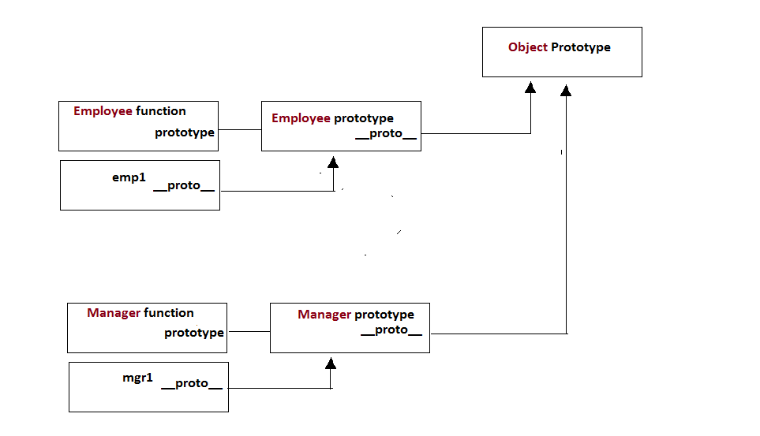
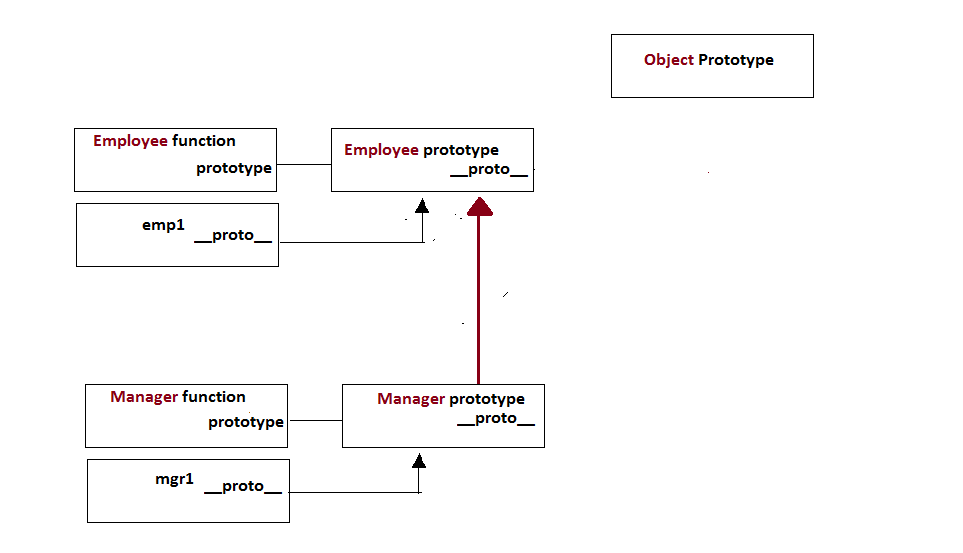

Inheritance case#1 (default behavior)
Objects created from different constructor functions

Inheritance case#2 (mgr objects have access to emp prototype)
Modify prototype of Manager objects to reference to Employee prototype
This is not recommented method to allow one object to access another object from different constructor function instead, we should use call function method
